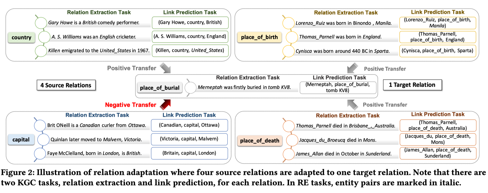
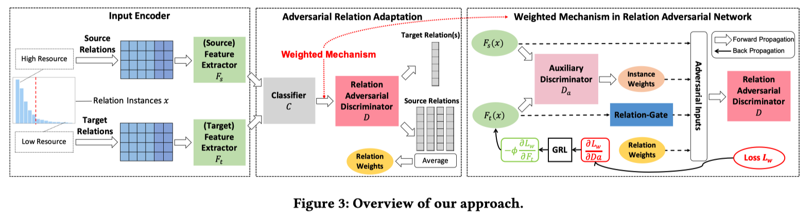
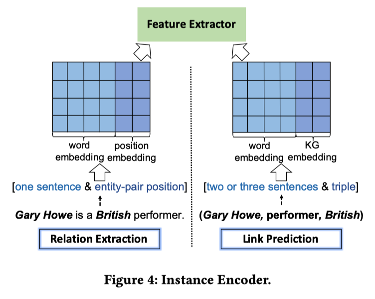
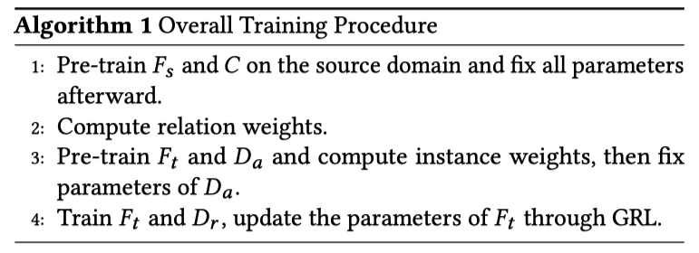
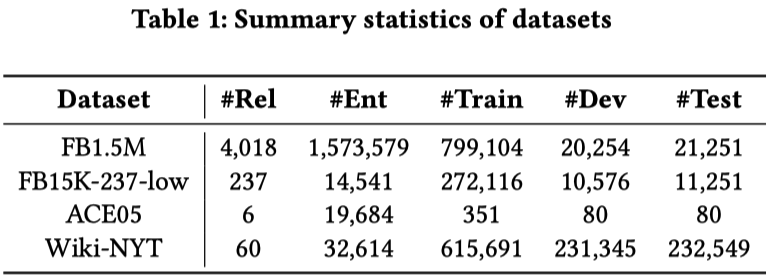
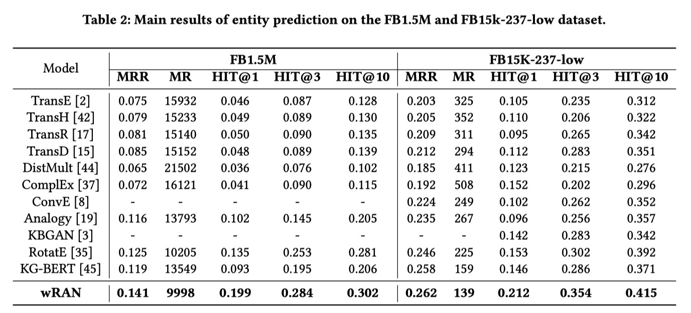

RAN:用于低资源条件下知识图谱补全的关系对抗网络
本文最后更新于：1 年前
贡献
本文首次将对抗性迁移学习应用于解决知识图完成的低资源问题（Low Resource Problem），主要针对的是链路预测和关系提取任务。
提出了关系对抗网络，利用关系鉴别器来区分来自不同关系的样本，然后学习从源关系到目标关系的持久性的特征。
提出了一种关系门控机制，充分放宽了共享标签空间的假设。该机制能够筛选出离群源关系/样本，缓解不相关关系/样本的负迁移，可以在端到端框架中进行训练。
本文提出了一个加权关系对抗网络（Weighted Relation Adversarial Network，wRAN）的通用框架，该框架利用对抗过程，将从资源丰富的关系中学到的知识/特征，去适应不同但相关的低资源关系。wRAN框架综合考虑了三部分问题：对抗迁移学习（Adversarial Transfer Learning），核心思想是通过对抗性学习过程提取领域不变性特征，该过程能够减少源域和目标域之间的分布差异；关系对抗网络（Relation Adversarial Network），学习通用的关系不变性特征，以此弄清不同关系背后的语言变化因素，并缩小相关关系之间的语言差异；负迁移（Negative Transfer），区别于标准的domain adaption源域和目标域之间的标签空间完全相同且共享，wRAN考虑从多个源关系到一个或多个目标关系的适应，并且考虑了不同的关系可能对迁移产生不同的影响，离群的源关系在与目标关系做判别时可能导致负迁移。

负迁移
如图中所示，RAN模型期望从三个源关系(place_of_death，place_of_birth和country)中学习一般的位置信息，然后将隐含知识适应于目标关系(place_of_burial)，以提高其预测性能。由于不同的关系可能对迁移产生不同的影响，并且在区分目标关系时存在可能导致负迁移的离群源关系。如图2所示，capital可能会导致向目标关系place_of_burial的负迁移，因为其并不描述人与地方的关系。
方法

实例编码机(Instance Encoder)
实例编码机的作用是根据不同的任务类型，给定一个实体对或句子实例，利用神经网络将实例语义编码为一个向量。在本研究中，我们使用卷积神经网络(CNNs)来实现实例编码器，同时考虑了模型性能和时间效率。

我们将非线性变换$F(·)$应用于$V$的向量表示，得到一个特征向量$F = F(V;θ)$。我们选择了两种卷积神经结构CNN和PCNN，将输入嵌入编码到实例嵌入中。还可以使用RNN等其他神经结构，以及ELMo和BERT等更复杂的方法。我们对这两个关系都采用非共享特征提取器，因为非共享提取器能够捕获更多关系特定的特征。本文通过学习源特征提取器$F_s$和分类器$C$来训练源鉴别模型$C(F_S(x;\theta))$用于分类任务：
其中y是源数据的标签，$L(\cdot)$是分类器的损失函数。
对抗关系适应(Adversarial Relation Adaptation)
为了构建关系对抗网络RAN，我们采用了标准的对抗迁移学习框架，类似但不同的是，wRAN是一个两者对抗的对抗学习过程，其中第一个参与者是被训练来区分源关系和目标关系的关系鉴别器D，第二个参与者是特征提取器F，它同时被训练来混淆关系鉴别器，并希望学习从源到目标关系的共同特征。一般的想法是同时学习关系鉴别和关系不变的特征，其中源数据的标签预测器的损失最小，而关系鉴别器的损失最大。
其中$F_s$和$F_t$分别是源数据和目标数据的特征提取器，$D$表示的是二分类的关系鉴别器（对应GAN中的鉴别器，将所有源数据标签置为1，所以目标数据标签置为0）。
加权关系适应(Weighted Relation Adaptation)
我们提出了一种关系门机制来识别不相关的源关系/样本，并自动降低它们的权重，以解决负迁移问题。
关系相关度(Relation Correlation)
源分类器$C(F_s(x_i))$揭示了源关系空间$r_s$上的概率分布。这个分布很好地描述了分配$x_i$给每个$|r_s|$关系的概率。我们平均标签预测$\hat{y}_i = C(F_s(x_i)),x_i \in D_t$,在所有目标数据,因为它是可能的来源分类器可以在某个目标上犯一些错误数据和分配大概率为false关系甚至离群值的关系。每个源关系对训练的贡献的权重可以计算如下：
$w^{\text {relation }}$是一个$|r_s|$维的用来量化每个不同的元关系的贡献度的权重向量。
实例转移能力(Instance Transfer Ability)
给定源目标关系的实例编码器，我们利用预先训练的辅助关系鉴别器进行实例权值学习。我们将辅助关系鉴别器最优参数的输出作为实例权值。其概念是，如果辅助关系鉴别器的激活量较大，则该鉴别器几乎可以正确地鉴别出样本与目标关系，这意味着样本很可能是不可转移的。实际上，在已知实例编码器学习到的$F_s$的情况下，通过优化$F_t(x)$和辅助关系鉴别器$D_a$，利用关系对抗损失来减少关系之间的移动:
为了避免退化解，我们用$F_s$的参数初始化$F_t$。辅助关系鉴别器由$D_a(f)=p(y=1|x)$给出，其中$x$是来自源和目标关系的输入。如果$D_a(f)\equiv 1$，那么样本很可能是不可转移的，因为它可以通过关系鉴别器几乎完全区别于目标分布。这些样本的贡献应该很小。因此，权值函数应该与$D_a(f)$成反比，定义源样本权值的一个自然方法是:
关系门机制(Relation-gate Mechanism)
关系权重和实例权重都是有用的。但可以明显看出，不同粒度的权重对不同的目标关系有不同的贡献。一方面，对于源关系语义相似度较低的目标关系(如located_in)，加强关系权值有利于减少离群关系的负面影响。另一方面，对于具有许多语义上相似的源关系(如live_in、was_born_in)的目标关系(如educated_in)，很难区分不同源关系的影响，这表明有必要学习细粒度的实例权重。因此，对于标号为$y_j$的源关系中的实例，该实例的权值为:
$w_{j}^{\text {relation }}$是向量$w^{\text {relation }}$第$j$个维度的值。然后使用$w_{i}^{t o t a l}=\frac{n_{s} w_{i}^{t o t a l}}{\sum_{i=1}^{n_{s}} w_{i}^{t o t a l}}$将权重标准化。其中$\alpha$是关系门用来平衡关系权重和实例权重的超参数。
其中$\sigma$是激活函数，$W_r$是权重矩阵。
训练过程
目标函数
其中$D_r$是关系对抗辨别器，其中权值$w^{total}$是自动计算并分配给源关系数据的，以弱化关于部分自适应的离群关系和不可转移的实例，这可以减轻负迁移。整个培训过程如下所示。

实验


本博客所有文章除特别声明外，均采用 CC BY-SA 4.0 协议 ，转载请注明出处！